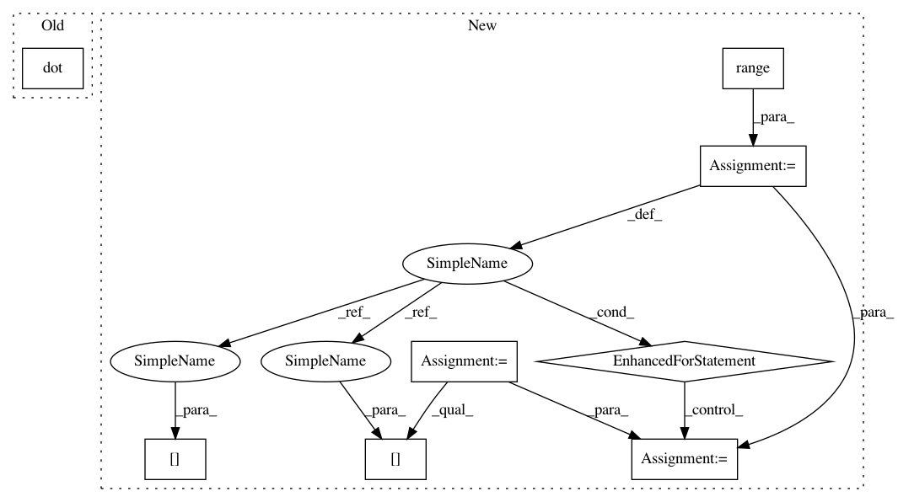

16d562f2d1a8df49fde1a2374c5e634a7400fd08,geomstats/special_euclidean_group.py,SpecialEuclideanGroup,group_exponential_barycenter,#SpecialEuclideanGroup#Any#Any#,328
Before Change
matrix += weights * matrix_aux
translation_aux += weights * np.dot(translations,
np.transpose(np.matmul(
matrix_aux,
inv_rot_mats), axes=(0, 2, 1)))
mean_translation = np.dot(translation_aux,
np.transpose(np.linalg.inv(matrix),
axes=(0, 2, 1)))
After Change
if weights is None:
weights = np.ones((n_points, 1))
if weights.ndim == 1:
weights = np.expand_dims(weights, axis=1)
assert weights.shape == (n_points, 1)
n_weights = weights.shape[0]
assert n_points == n_weights
dim_rotations = self.rotations.dimension
dim = self.dimension
rotation_vectors = points[:, :dim_rotations]
translations = points[:, dim_rotations:dim]
assert rotation_vectors.shape == (n_points, dim_rotations)
assert translations.shape == (n_points, self.n)
mean_rotation = self.rotations.group_exponential_barycenter(
points=rotation_vectors,
weights=weights)
mean_rotation_mat = self.rotations.matrix_from_rotation_vector(
mean_rotation)
matrix = np.zeros([1, self.n, self.n])
translation_aux = np.zeros([1, self.n])
inv_rot_mats = self.rotations.matrix_from_rotation_vector(
-rotation_vectors)
// TODO(nina): this is the same mat multiplied several times
matrix_aux = np.matmul(mean_rotation_mat, inv_rot_mats)
assert matrix_aux.shape == (n_points, dim_rotations, dim_rotations)
vec_aux = self.rotations.rotation_vector_from_matrix(matrix_aux)
matrix_aux = self.exponential_matrix(vec_aux)
matrix_aux = np.linalg.inv(matrix_aux)
for i in range(n_points):
matrix += weights[i] * matrix_aux[i]
translation_aux += weights[i] * np.dot(np.matmul(
matrix_aux[i],
inv_rot_mats[i]),
translations[i])
mean_translation = np.dot(translation_aux,
np.transpose(np.linalg.inv(matrix),
axes=(0, 2, 1)))
In pattern: SUPERPATTERN
Frequency: 3
Non-data size: 8
Instances
Project Name: geomstats/geomstats
Commit Name: 16d562f2d1a8df49fde1a2374c5e634a7400fd08
Time: 2018-02-04
Author: ninamio78@gmail.com
File Name: geomstats/special_euclidean_group.py
Class Name: SpecialEuclideanGroup
Method Name: group_exponential_barycenter
Project Name: geomstats/geomstats
Commit Name: 16d562f2d1a8df49fde1a2374c5e634a7400fd08
Time: 2018-02-04
Author: ninamio78@gmail.com
File Name: geomstats/special_euclidean_group.py
Class Name: SpecialEuclideanGroup
Method Name: group_exponential_barycenter
Project Name: geomstats/geomstats
Commit Name: 2e296adb05f62e4821c36b6f42b1470bdb10eaa6
Time: 2018-02-05
Author: ninamio78@gmail.com
File Name: geomstats/special_euclidean_group.py
Class Name: SpecialEuclideanGroup
Method Name: inverse
Project Name: cornellius-gp/gpytorch
Commit Name: ab4d0a6e6cded5c967d601da6000b8c50b5c65ef
Time: 2017-09-08
Author: ruihan.wu14@gmail.com
File Name: gpytorch/utils/toeplitz.py
Class Name:
Method Name: sym_toeplitz_derivative_quadratic_form